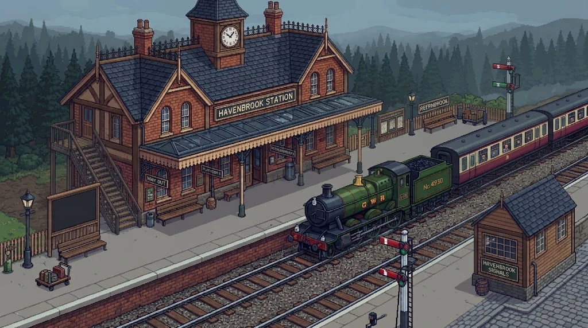

Tap the floor to walk. Tap someone to chat.

v0.0.0
The train to the castle leaves soon...
Tap the floor to walk. Tap someone to chat.
The Traitors are meeting in secret.
By order of the Traitors,
you have been murdered.
Who will the Traitors murder tonight? You pick.
Everyone at the castle